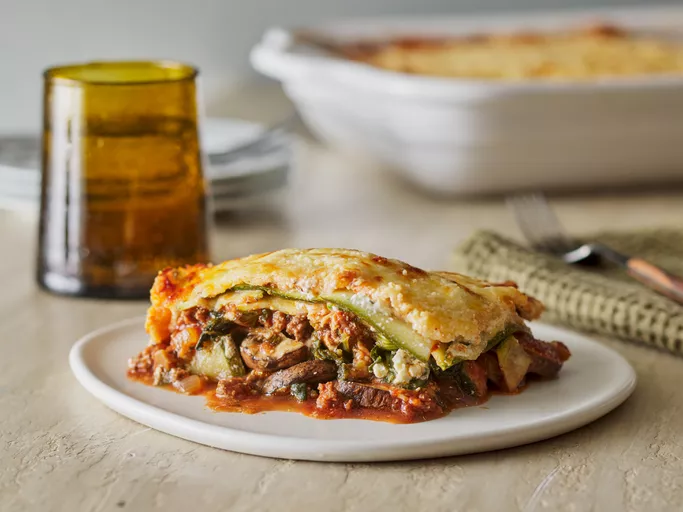

Lasagna

Description
Lasagna (UK: /ləˈzænjə/, US: /ləˈzɑːnjə/, Italian: [laˈzaɲɲa]), also known as lasagne (Italian: [laˈzaɲɲe]), is a type of pasta, possibly one of the oldest types, made in very wide, flat sheets. In Italian cuisine it is made of stacked layers of pasta alternating with fillings such as ragù (ground meats and tomato sauce), béchamel sauce, vegetables, cheeses (which may include ricotta, mozzarella, and Parmesan), and seasonings and spices. The dish may be topped with grated cheese, which melts during baking. Typically cooked pasta is assembled with the other ingredients and then baked in an oven (al forno). The resulting baked pasta is cut into single-serving square or rectangular portions
Ingridients
- Zucchini: Of course, you’ll need zucchini! Two large zucchini should make enough for eight servings.
- Seasonings: This zucchini lasagna is seasoned with salt, pepper, fresh basil, fresh oregano, and fresh parsley.
- Beef: This recipe calls for ground beef, but you can use ground turkey for a lighter take.
- Fresh produce: Aside from the zucchini, you’ll also need a green bell pepper, an onion, and mushrooms from the produce aisle.
- Frozen spinach: Frozen spinach is a convenient, colorful, and nutrient-rich ingredient.
- Tomato products: A combination tomato paste and tomato sauce.
- Wine: Red wine enhances the overall flavor.
- Cheese: You’ll need low-fat ricotta cheese, mozzarella cheese, and Parmesan cheese.
- Egg: An egg adds moisture and helps bind the ricotta mixture together, preventing runniness.
Steps
- Slice, salt, and drain the zucchini.
- Make the meat sauce.
- Make the tomato sauce.
- Make the ricotta mixture.
- Assemble the zucchini lasagna according to the detailed instructions in the recipe.
- Bake according to the recipe.